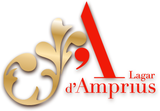
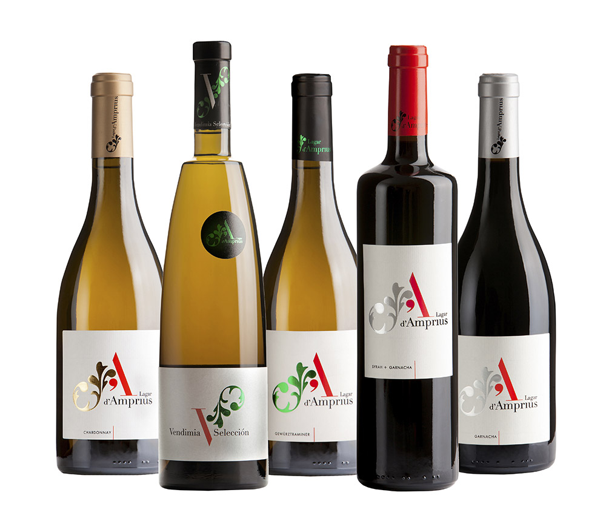
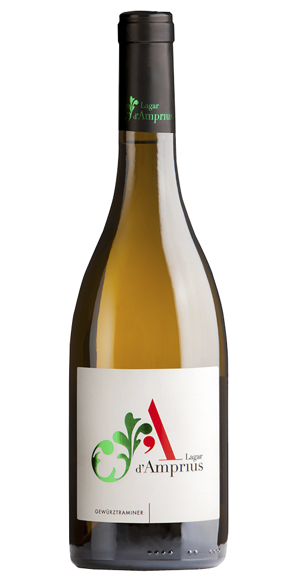
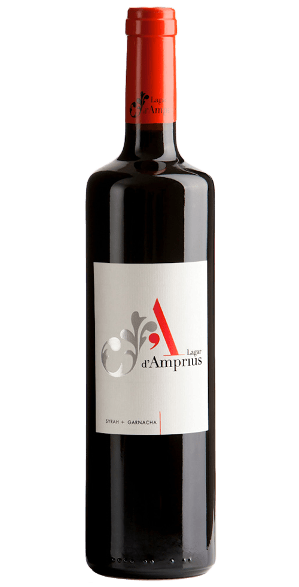

Obesión por lo singular
... Tal cual
"Vino es el alimento alcohólico obtenido del zumo de uvas exprimidas y sometido naturalmente a fermentación"
Las claves de nuestro proyecto
El viñedo
Dispuestos en diferentes parajes delimitados por barreras naturales de pinos, robles, madroños y matorral bajo de romero, espliego y jaras, nuestros viñedos ocupan una superficie de 41 hectáreas...
Las personas
Los excelentes profesionales Jesús y Jorge Navascués, creadores del acreditado gabinete NAVASCUÉS ENOLOGíA, S.L., se interesaron desde el principio en liderar el proyecto Lagar d'Amprius
Los vinos

Dispuestos en diferentes parajes delimitados por barreras naturales de pinos, robles, madroños y matorral bajo de romero, espliego y jaras, nuestros viñedos ocupan una superficie de 41 hectáreas...
Hoy recomendamos

Gewürtztraminer 2013
Lagar d'Amprius Gewürztraminer es un vino único y especial, manteniendo la tipicidad de la variedad pero a su vez enseñando su carácter mediterráneo.

Syrah + Garnacha 2010
Lagar d'Amprius Syrah+Garnacha es 65% Syrah y 35% Garnacha fina. Es un vino complejo y elegante, con un tanino redondo y denso.